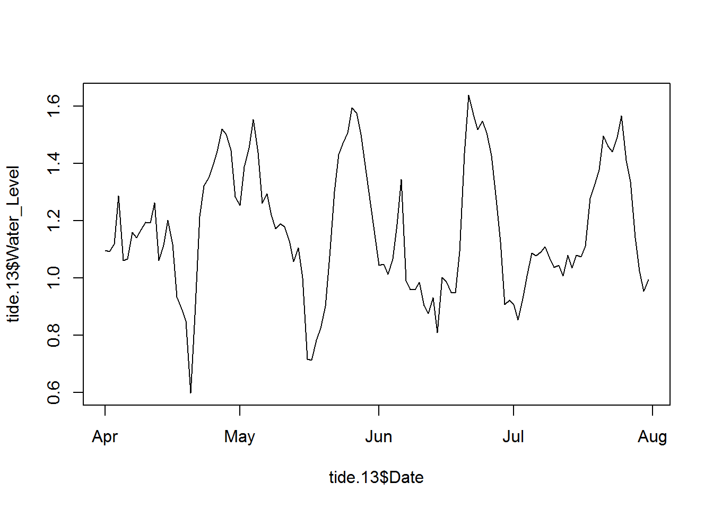
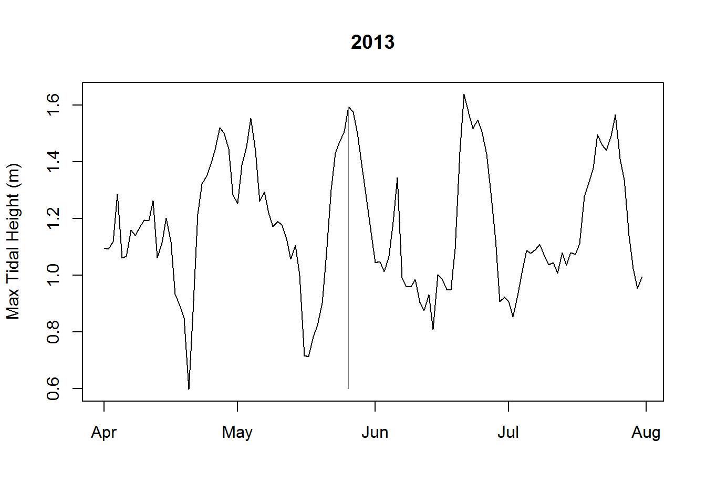
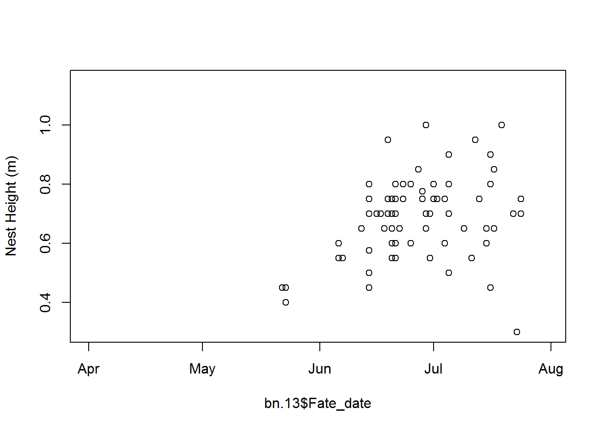
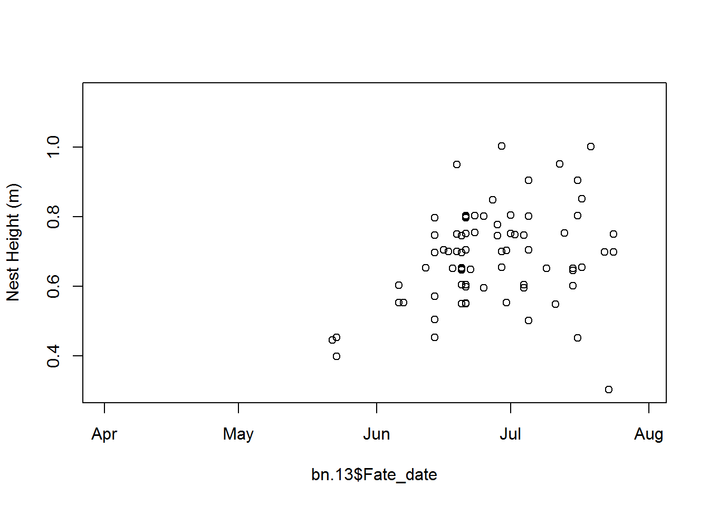
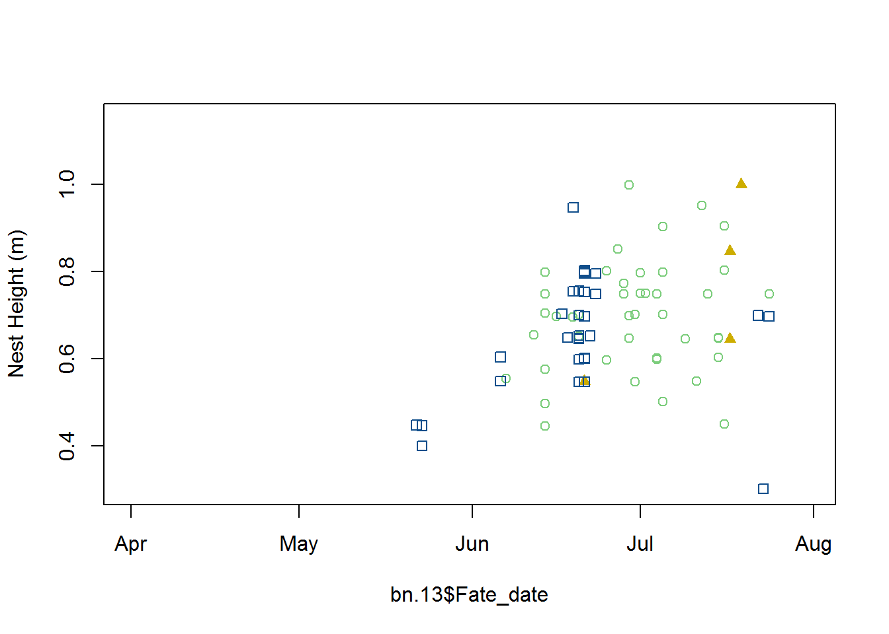
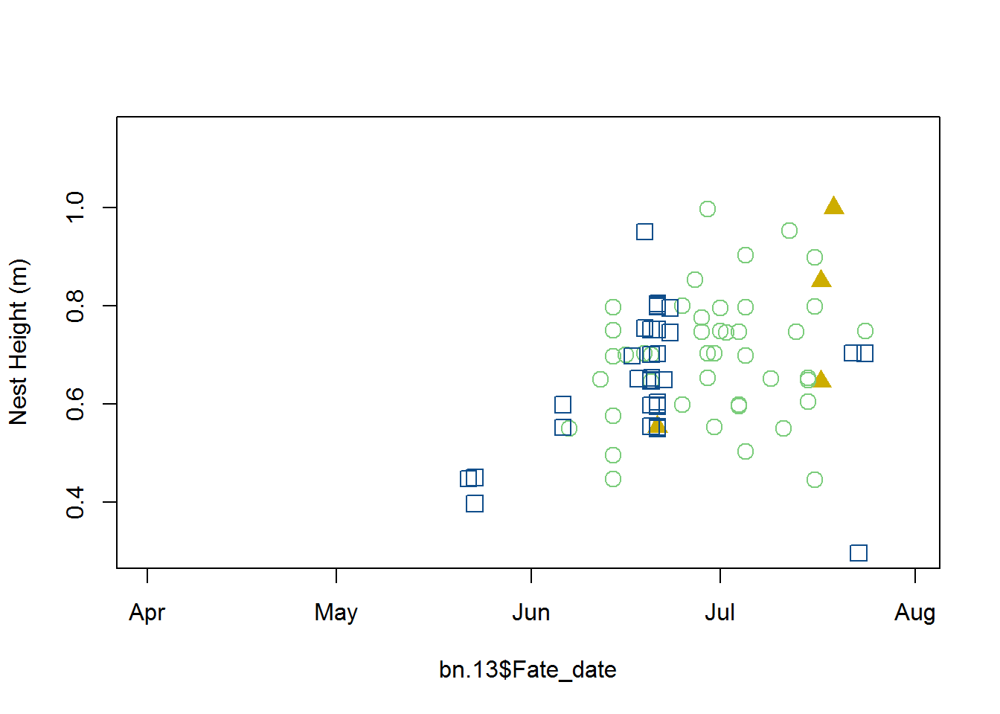
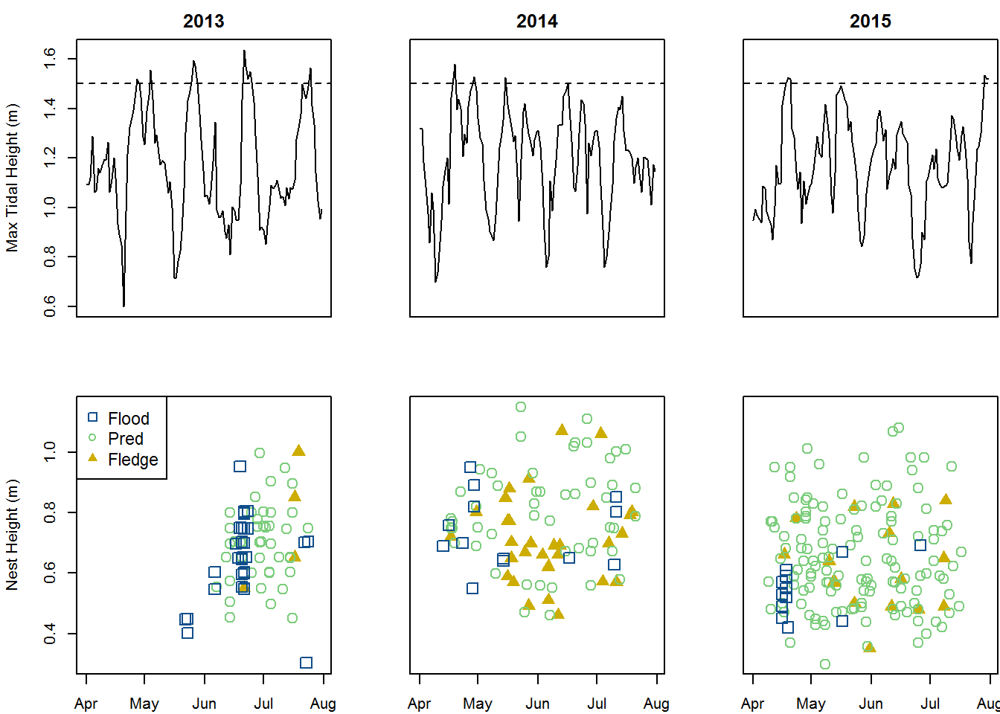
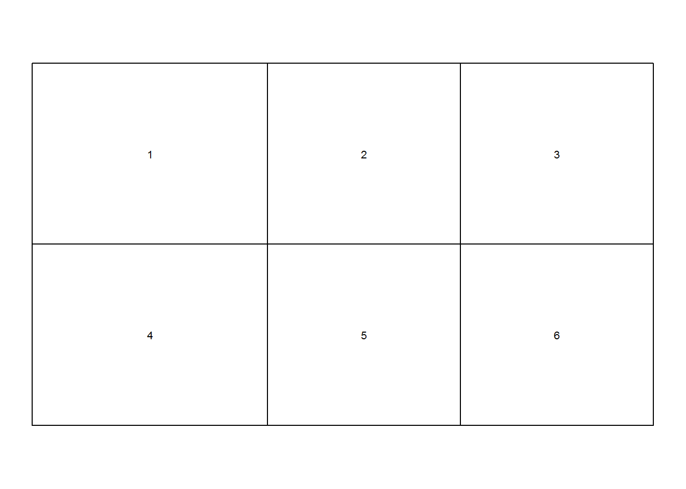
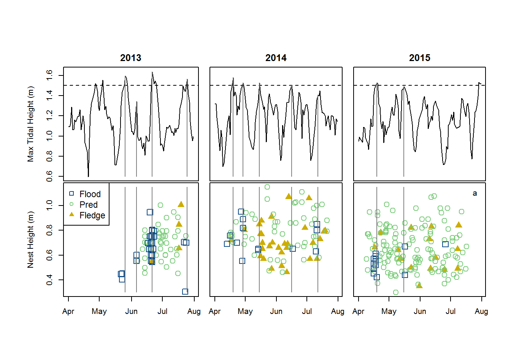

These data are nest fates for Seaside Sparrows that live in tidal marshes. We’re going to make a figure that shows both how nest height and tidal height affect Seaside Sparrow nest fates. See Hunter et al. 2016 Animal Behaviour for more information.
tide = read.csv("tide_ALL_navd_hh.csv", header=TRUE)
tide$Date = as.Date(tide$Date, format="%m/%d/%Y")
tide$Year = substr(tide$Date, 3, 4)
tide.13 = tide[tide$Year==13,]
tide.14 = tide[tide$Year==14,]
tide.15 = tide[tide$Year==15,]
bn = read.csv("Nest_basic_ALL.csv", header=TRUE)
#Extract pertinent data
bn = bn[bn$Species=="SESP",]
bn = bn[bn$Fate_date!="",]
bn = bn[bn$Fate!="NA",]
bn = bn[bn$Fate!=4,]
bn = na.omit(bn)
#Put dates/times in correct format
bn$Date_found = as.Date(bn$Date_found, format="%m/%d/%Y")
bn$Fate_date = as.Date(bn$Fate_date, format="%m/%d/%Y")
bn$Start_date = as.Date(bn$Start_date, format="%m/%d/%Y")
bn$year = substr(bn$Start_date, 3, 4)
bn = bn[order(bn$year, -bn$Fate),]
bn.13 = bn[bn$year==13,]
bn.14 = bn[bn$year==14,]
bn.15 = bn[bn$year==15,]
#Take a look at data structure
head(bn)## NestID Species Date_found Veg_spp Veg_height Nest_height Fate
## 36 CRD21 SESP 2013-06-22 SPARALTE 1.25 0.550 5
## 334 SSC37 SESP 2013-06-26 SPARALTE 1.50 1.000 5
## 338 SSC40 SESP 2013-06-26 SPARALTE 1.25 0.850 5
## 341 SSC43 SESP 2013-06-28 SPARALTE 1.25 0.650 5
## 24 CRD10 SESP 2013-06-12 SPARALTE 0.85 0.500 3
## 25 CRD11 SESP 2013-06-12 SPARALTE 0.85 0.575 3
## Fate_date Fate_time Female Male Def_Pairs Lik_Pairs Prev_Nest
## 36 2013-06-21
## 334 2013-07-19 7:00:00 PS7 SSC10
## 338 2013-07-17 19:00:00 PS10 SSC12
## 341 2013-07-17 18:00:00 PS13 SSC21
## 24 2013-06-14 4:00:00
## 25 2013-06-14 15:00:00 PC1
## Start_date year
## 36 2013-06-20 13
## 334 2013-06-27 13
## 338 2013-06-26 13
## 341 2013-06-28 13
## 24 2013-06-12 13
## 25 2013-06-12 13First, we’ll start by making single-panel figures of tides and nest fates.
#Plot tide height as a function of time
plot(tide.13$Water_Level ~ tide.13$Date, type="l")
#Fix up the plot a bit
plot(tide.13$Water_Level ~ tide.13$Date, type="l", ylab="Max Tidal Height (m)", lwd=1, main="2013", xlab="")
#Add segments to show when in the tidal cycle sparrow nests were flooded
segments(x0=as.Date("2013-05-26"), x1=as.Date("2013-05-26"), y0=0.6, y1=1.595, col=gray(0.5))
###
#Plot nest fate as a function of time and nest height
plot(x=bn.13$Fate_date, y=bn.13$Nest_height, xlim=c(min(tide.13$Date), max(tide.13$Date)),
ylim=c(min(bn$Nest_height), max(bn$Nest_height)), ylab="Nest Height (m)")
#"Jitter" to show overlapping points
plot(x=bn.13$Fate_date, y=jitter(bn.13$Nest_height), xlim=c(min(tide.13$Date), max(tide.13$Date)),
ylim=c(min(bn$Nest_height), max(bn$Nest_height)), ylab="Nest Height (m)")
#Color and shapes to distiguish fates
plot(x=bn.13$Fate_date, y=jitter(bn.13$Nest_height), xlim=c(min(tide.13$Date), max(tide.13$Date)),
ylim=c(min(bn$Nest_height), max(bn$Nest_height)), ylab="Nest Height (m)",
col=ifelse(bn.13$Fate==1, "dodgerblue4", ifelse(bn.13$Fate==3, "palegreen3", "gold3")),
pch=ifelse(bn.13$Fate==1, 0, ifelse(bn.13$Fate==3, 1, 17)))
#Cex to change size of pch
plot(x=bn.13$Fate_date, y=jitter(bn.13$Nest_height), xlim=c(min(tide.13$Date), max(tide.13$Date)),
ylim=c(min(bn$Nest_height), max(bn$Nest_height)), ylab="Nest Height (m)",
col=ifelse(bn.13$Fate==1, "dodgerblue4", ifelse(bn.13$Fate==3, "palegreen3", "gold3")),
pch=ifelse(bn.13$Fate==1, 0, ifelse(bn.13$Fate==3, 1, 17)), cex=1.5)
There are several ways to make multipanel figures in R. We’ll start with the easiest (changing the par(mfrow) options), and then look at how to use layout() to make a publication-ready figure.
#Multipanel plotting using par(mfrow) and par(mar) to change panel margins.
par(mfrow=c(2,3), mar=c(2, 4, 2, 0) + 0.1)
plot(tide.13$Water_Level ~ tide.13$Date, type="l", ylim=c(min(tide$Water_Level), max(tide$Water_Level)), ylab="Max Tidal Height (m)", lwd=1,
xaxt="n", main="2013")
abline(1.5, 0, lty=2)
plot(tide.14$Water_Level ~ tide.14$Date, type="l", ylim=c(min(tide$Water_Level), max(tide$Water_Level)), ylab="", lwd=1,
xaxt="n", yaxt="n", main="2014")
abline(1.5, 0, lty=2)
plot(tide.15$Water_Level ~ tide.15$Date, type="l", ylim=c(min(tide$Water_Level), max(tide$Water_Level)), ylab="", lwd=1,
xaxt="n", yaxt="n", main="2015")
abline(1.5, 0, lty=2)
plot(x=bn.13$Fate_date, y=jitter(bn.13$Nest_height), col=ifelse(bn.13$Fate==1, "dodgerblue4", ifelse(bn.13$Fate==3, "palegreen3", "gold3")),
pch=ifelse(bn.13$Fate==1, 0, ifelse(bn.13$Fate==3, 1, 17)), xlim=c(min(tide.13$Date), max(tide.13$Date)),
ylim=c(min(bn$Nest_height), max(bn$Nest_height)), ylab="Nest Height (m)", cex=1.5)
legend("topleft", legend=c("Flood", "Pred", "Fledge"), col=c("dodgerblue4", "palegreen3", "gold3"), pch=c(0,1,17), cex=1.1)
plot(x=bn.14$Fate_date, y=jitter(bn.14$Nest_height), col=ifelse(bn.14$Fate==1, "dodgerblue4", ifelse(bn.14$Fate==3, "palegreen3", "gold3")),
pch=ifelse(bn.14$Fate==1, 0, ifelse(bn.14$Fate==3, 1, 17)), xlim=c(min(tide.14$Date), max(tide.14$Date)),
ylim=c(min(bn$Nest_height), max(bn$Nest_height)), ylab="", yaxt="n", cex=1.5)
plot(x=bn.15$Fate_date, y=jitter(bn.15$Nest_height), col=ifelse(bn.15$Fate==1, "dodgerblue4", ifelse(bn.15$Fate==3, "palegreen3", "gold3")),
pch=ifelse(bn.15$Fate==1, 0, ifelse(bn.15$Fate==3, 1, 17)), xlim=c(min(tide.15$Date), max(tide.15$Date)),
ylim=c(min(bn$Nest_height), max(bn$Nest_height)), ylab="", yaxt="n", cex=1.5)
#This looks okay, but we want our panels to be closer together and for our y-axis labels to have more room.
#Multipanel plotting using layout()
temp.layout <- layout(matrix(c(1,2,3,4,5,6),2,3,byrow=TRUE), widths=c(lcm(6.1),lcm(5),lcm(5)), heights=c(lcm(4.7),lcm(4.7)))
#Take a look at the layout we've created.
layout.show(temp.layout)
#Here we will change the panel margins for each panel separately using par(mar)
par(mar=c(0, 4, 2, 0) + 0.1)
plot(tide.13$Water_Level ~ tide.13$Date, type="l", ylim=c(min(tide$Water_Level), max(tide$Water_Level)), ylab="Max Tidal Height (m)", lwd=1,
xaxt="n", main="2013")
abline(1.5, 0, lty=2)
segments(x0=as.Date("2013-05-26"), x1=as.Date("2013-05-26"), y0=0.6, y1=1.595, col=gray(0.5))
segments(x0=as.Date("2013-06-06"), x1=as.Date("2013-06-06"), y0=0.6, y1=1.344, col=gray(0.5))
segments(x0=as.Date("2013-06-21"), x1=as.Date("2013-06-21"), y0=0.6, y1=1.638, col=gray(0.5))
segments(x0=as.Date("2013-07-25"), x1=as.Date("2013-07-25"), y0=0.6, y1=1.566, col=gray(0.5))
par(mar=c(0, 1, 2, 0) + 0.1)
plot(tide.14$Water_Level ~ tide.14$Date, type="l", ylim=c(min(tide$Water_Level), max(tide$Water_Level)), ylab="Max Tidal Height (m)", lwd=1,
xaxt="n", yaxt="n", main="2014")
abline(1.5, 0, lty=2)
segments(x0=as.Date("2014-04-19"), x1=as.Date("2014-04-19"), y0=0.6, y1=1.579, col=gray(0.5))
segments(x0=as.Date("2014-04-29"), x1=as.Date("2014-04-29"), y0=0.6, y1=1.527, col=gray(0.5))
segments(x0=as.Date("2014-05-15"), x1=as.Date("2014-05-15"), y0=0.6, y1=1.526, col=gray(0.5))
segments(x0=as.Date("2014-06-16"), x1=as.Date("2014-06-16"), y0=0.6, y1=1.502, col=gray(0.5))
segments(x0=as.Date("2014-07-12"), x1=as.Date("2014-07-12"), y0=0.6, y1=1.406, col=gray(0.5))
par(mar=c(0, 1, 2, 0) + 0.1)
plot(tide.15$Water_Level ~ tide.15$Date, type="l", ylim=c(min(tide$Water_Level), max(tide$Water_Level)), ylab="Max Tidal Height (m)", lwd=1,
xaxt="n", yaxt="n", main="2015")
abline(1.5, 0, lty=2)
segments(x0=as.Date("2015-04-19"), x1=as.Date("2015-04-19"), y0=0.6, y1=1.526, col=gray(0.5))
segments(x0=as.Date("2015-05-16"), x1=as.Date("2015-05-16"), y0=0.6, y1=1.491, col=gray(0.5))
par(mar=c(2, 4, 0, 0) + 0.1)
plot(x=bn.13$Fate_date, y=jitter(bn.13$Nest_height), col=ifelse(bn.13$Fate==1, "dodgerblue4", ifelse(bn.13$Fate==3, "palegreen3", "gold3")),
pch=ifelse(bn.13$Fate==1, 0, ifelse(bn.13$Fate==3, 1, 17)), xlim=c(min(tide.13$Date), max(tide.13$Date)),
ylim=c(min(bn$Nest_height), max(bn$Nest_height)), ylab="Nest Height (m)", cex=1.5)
segments(x0=as.Date("2013-05-26"), x1=as.Date("2013-05-26"), y0=0.3, y1=1.15, col=gray(0.5))
segments(x0=as.Date("2013-06-06"), x1=as.Date("2013-06-06"), y0=0.3, y1=1.15, col=gray(0.5))
segments(x0=as.Date("2013-06-21"), x1=as.Date("2013-06-21"), y0=0.3, y1=1.15, col=gray(0.5))
segments(x0=as.Date("2013-07-25"), x1=as.Date("2013-07-25"), y0=0.3, y1=1.15, col=gray(0.5))
legend("topleft", legend=c("Flood", "Pred", "Fledge"), col=c("dodgerblue4", "palegreen3", "gold3"), pch=c(0,1,17), cex=1.1)
par(mar=c(2, 1, 0, 0) + 0.1)
plot(x=bn.14$Fate_date, y=jitter(bn.14$Nest_height), col=ifelse(bn.14$Fate==1, "dodgerblue4", ifelse(bn.14$Fate==3, "palegreen3", "gold3")),
pch=ifelse(bn.14$Fate==1, 0, ifelse(bn.14$Fate==3, 1, 17)), xlim=c(min(tide.14$Date), max(tide.14$Date)),
ylim=c(min(bn$Nest_height), max(bn$Nest_height)), ylab="Nest Height (m)", yaxt="n", cex=1.5)
segments(x0=as.Date("2014-04-19"), x1=as.Date("2014-04-19"), y0=0.3, y1=1.15, col=gray(0.5))
segments(x0=as.Date("2014-04-29"), x1=as.Date("2014-04-29"), y0=0.3, y1=1.15, col=gray(0.5))
segments(x0=as.Date("2014-05-15"), x1=as.Date("2014-05-15"), y0=0.3, y1=1.15, col=gray(0.5))
segments(x0=as.Date("2014-06-16"), x1=as.Date("2014-06-16"), y0=0.3, y1=1.15, col=gray(0.5))
segments(x0=as.Date("2014-07-12"), x1=as.Date("2014-07-12"), y0=0.3, y1=1.15, col=gray(0.5))
par(mar=c(2, 1, 0, 0) + 0.1)
plot(x=bn.15$Fate_date, y=jitter(bn.15$Nest_height), col=ifelse(bn.15$Fate==1, "dodgerblue4", ifelse(bn.15$Fate==3, "palegreen3", "gold3")),
pch=ifelse(bn.15$Fate==1, 0, ifelse(bn.15$Fate==3, 1, 17)), xlim=c(min(tide.15$Date), max(tide.15$Date)),
ylim=c(min(bn$Nest_height), max(bn$Nest_height)), ylab="Nest Height (m)", yaxt="n", cex=1.5)
segments(x0=as.Date("2015-04-19"), x1=as.Date("2015-04-19"), y0=0.3, y1=1.15, col=gray(0.5))
segments(x0=as.Date("2015-05-16"), x1=as.Date("2015-05-16"), y0=0.3, y1=1.15, col=gray(0.5))
#Asides: try adding these other arguments to the plot() function
#To change orientation of figure labels: las=2
#To put the tick marks inside the plot: tcl=0.5
#To get rid of the bounding box: bty="l"
#To put text in the figure:
text(x=as.Date("2015-07-25"), y=1.1, "a")
#Multipanel plotting using split.screen()
#Check out: http://seananderson.ca/courses/11-multipanel/multipanel.pdfNow we want to write our figure directly to a vector graphics file that has the correct dimensions for a double column figure in a publication (no further editing required!).
###
#Write figure to a pdf (or other format) with the correct dimensions for publication
#Using pdf() will not plot within RStudio, but directly write a file to your working directory
pdf("Figure2.pdf", width=7.6, height=3.8)
layout(matrix(c(1,2,3,4,5,6),2,3,byrow=TRUE), widths=c(lcm(7),lcm(6),lcm(6)), heights=c(lcm(4.7),lcm(4.7)))
par(mar=c(0, 4, 2, 0) + 0.1)
plot(tide.13$Water_Level ~ tide.13$Date, type="l", ylim=c(min(tide$Water_Level), max(tide$Water_Level)), ylab="Max Tidal Height (m)", lwd=1,
xaxt="n", main="2013")
abline(1.5, 0, lty=2)
segments(x0=as.Date("2013-05-26"), x1=as.Date("2013-05-26"), y0=0.6, y1=1.595, col=gray(0.5))
segments(x0=as.Date("2013-06-06"), x1=as.Date("2013-06-06"), y0=0.6, y1=1.344, col=gray(0.5))
segments(x0=as.Date("2013-06-21"), x1=as.Date("2013-06-21"), y0=0.6, y1=1.638, col=gray(0.5))
segments(x0=as.Date("2013-07-25"), x1=as.Date("2013-07-25"), y0=0.6, y1=1.566, col=gray(0.5))
par(mar=c(0, 1, 2, 0) + 0.1)
plot(tide.14$Water_Level ~ tide.14$Date, type="l", ylim=c(min(tide$Water_Level), max(tide$Water_Level)), ylab="Max Tidal Height (m)", lwd=1,
xaxt="n", yaxt="n", main="2014")
abline(1.5, 0, lty=2)
segments(x0=as.Date("2014-04-19"), x1=as.Date("2014-04-19"), y0=0.6, y1=1.579, col=gray(0.5))
segments(x0=as.Date("2014-04-29"), x1=as.Date("2014-04-29"), y0=0.6, y1=1.527, col=gray(0.5))
segments(x0=as.Date("2014-05-15"), x1=as.Date("2014-05-15"), y0=0.6, y1=1.526, col=gray(0.5))
segments(x0=as.Date("2014-06-16"), x1=as.Date("2014-06-16"), y0=0.6, y1=1.502, col=gray(0.5))
segments(x0=as.Date("2014-07-12"), x1=as.Date("2014-07-12"), y0=0.6, y1=1.406, col=gray(0.5))
par(mar=c(0, 1, 2, 0) + 0.1)
plot(tide.15$Water_Level ~ tide.15$Date, type="l", ylim=c(min(tide$Water_Level), max(tide$Water_Level)), ylab="Max Tidal Height (m)", lwd=1,
xaxt="n", yaxt="n", main="2015")
abline(1.5, 0, lty=2)
segments(x0=as.Date("2015-04-19"), x1=as.Date("2015-04-19"), y0=0.6, y1=1.526, col=gray(0.5))
segments(x0=as.Date("2015-05-16"), x1=as.Date("2015-05-16"), y0=0.6, y1=1.491, col=gray(0.5))
par(mar=c(2, 4, 0, 0) + 0.1)
plot(x=bn.13$Fate_date, y=jitter(bn.13$Nest_height), col=ifelse(bn.13$Fate==1, "dodgerblue4", ifelse(bn.13$Fate==3, "palegreen3", "gold3")),
pch=ifelse(bn.13$Fate==1, 0, ifelse(bn.13$Fate==3, 1, 17)), xlim=c(min(tide.13$Date), max(tide.13$Date)),
ylim=c(min(bn$Nest_height), max(bn$Nest_height)), ylab="Nest Height (m)", cex=1.5)
segments(x0=as.Date("2013-05-26"), x1=as.Date("2013-05-26"), y0=0.3, y1=1.15, col=gray(0.5))
segments(x0=as.Date("2013-06-06"), x1=as.Date("2013-06-06"), y0=0.3, y1=1.15, col=gray(0.5))
segments(x0=as.Date("2013-06-21"), x1=as.Date("2013-06-21"), y0=0.3, y1=1.15, col=gray(0.5))
segments(x0=as.Date("2013-07-25"), x1=as.Date("2013-07-25"), y0=0.3, y1=1.15, col=gray(0.5))
legend("topleft", legend=c("Flood", "Pred", "Fledge"), col=c("dodgerblue4", "palegreen3", "gold3"), pch=c(0,1,17), cex=1.1)
par(mar=c(2, 1, 0, 0) + 0.1)
plot(x=bn.14$Fate_date, y=jitter(bn.14$Nest_height), col=ifelse(bn.14$Fate==1, "dodgerblue4", ifelse(bn.14$Fate==3, "palegreen3", "gold3")),
pch=ifelse(bn.14$Fate==1, 0, ifelse(bn.14$Fate==3, 1, 17)), xlim=c(min(tide.14$Date), max(tide.14$Date)),
ylim=c(min(bn$Nest_height), max(bn$Nest_height)), ylab="Nest Height (m)", yaxt="n", cex=1.5)
segments(x0=as.Date("2014-04-19"), x1=as.Date("2014-04-19"), y0=0.3, y1=1.15, col=gray(0.5))
segments(x0=as.Date("2014-04-29"), x1=as.Date("2014-04-29"), y0=0.3, y1=1.15, col=gray(0.5))
segments(x0=as.Date("2014-05-15"), x1=as.Date("2014-05-15"), y0=0.3, y1=1.15, col=gray(0.5))
segments(x0=as.Date("2014-06-16"), x1=as.Date("2014-06-16"), y0=0.3, y1=1.15, col=gray(0.5))
segments(x0=as.Date("2014-07-12"), x1=as.Date("2014-07-12"), y0=0.3, y1=1.15, col=gray(0.5))
par(mar=c(2, 1, 0, 0) + 0.1)
plot(x=bn.15$Fate_date, y=jitter(bn.15$Nest_height), col=ifelse(bn.15$Fate==1, "dodgerblue4", ifelse(bn.15$Fate==3, "palegreen3", "gold3")),
pch=ifelse(bn.15$Fate==1, 0, ifelse(bn.15$Fate==3, 1, 17)), xlim=c(min(tide.15$Date), max(tide.15$Date)),
ylim=c(min(bn$Nest_height), max(bn$Nest_height)), ylab="Nest Height (m)", yaxt="n", cex=1.5)
segments(x0=as.Date("2015-04-19"), x1=as.Date("2015-04-19"), y0=0.3, y1=1.15, col=gray(0.5))
segments(x0=as.Date("2015-05-16"), x1=as.Date("2015-05-16"), y0=0.3, y1=1.15, col=gray(0.5))
dev.off()## png
## 2